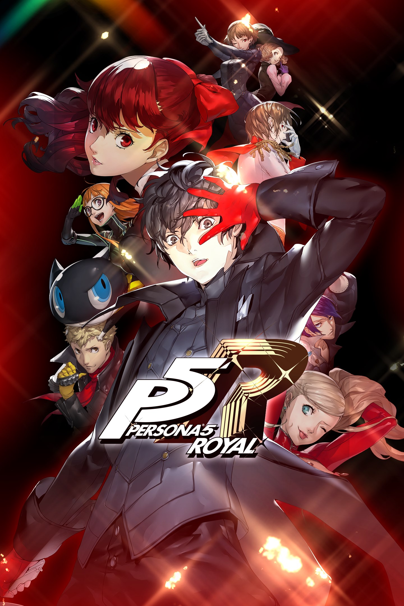

Persona 5 Royal
Vista a máscara dos Phantom Thieves e desafie as injustiças em um RPG japonês cheio de mistérios, amizades e batalhas estratégicas.
Ir para DownloadsSobre o Jogo
Persona 5 Royal é uma versão expandida do RPG da ATLUS. Você acompanha um estudante que se muda para Tóquio e, ao lado de seus amigos, passa a integrar os Phantom Thieves of Hearts. O grupo invade mundos sobrenaturais conhecidos como Palácios para enfrentar desejos distorcidos e tentar transformar a sociedade. Durante o dia, é possível frequentar a escola, explorar Tóquio e fortalecer amizades. Nas incursões, você enfrenta Sombras em combates por turnos, utiliza Personas e planeja estratégias para superar os inimigos. Royal acrescenta novos personagens, histórias, cenas e atividades à experiência.
Trailer Oficial
Requisitos do Sistema
Mínimos
- SO: Windows 10 (64 bits)
- Processador: Intel Core i7-4790 ou AMD Ryzen 5 1500X
- Memória: 8 GB de RAM
- Placa de vídeo: NVIDIA GeForce GTX 650 Ti (2 GB) ou AMD Radeon R7 360 (2 GB)
- DirectX: Versão 11
- Armazenamento: 41 GB de espaço disponível
Recomendados
- SO: Windows 10 (64-bit)
- Processador: Intel Core i7-4790 ou AMD Ryzen 5 1500X
- Memória: 8 GB de RAM
- Placa de vídeo: NVIDIA GeForce GTX 760 (2 GB) ou AMD Radeon HD 7870
- DirectX: Versão 11
- Armazenamento: 41 GB de espaço disponível